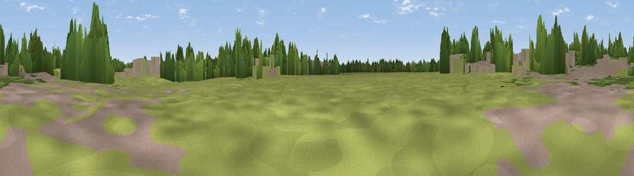

Viewpoint near Blackfield
#44845 in England · top 90% of its area beats it · near BlackfieldThe view, rendered

A 360° render of this exact spot computed from the terrain model, tree cover and land cover — summer colours, afternoon light, calibrated against photographs of famous viewpoints. Real trees, hedges and buildings will differ in detail.
The panorama
Grey silhouette: terrain skyline in each direction (720 bearings, Earth curvature and refraction included). Dashed green: skyline with trees (+15 m) and buildings (+8 m) as obstacles. Blue strip: how far the ground is visible on each bearing.
Where the view opens
Wedge length = distance to the farthest visible ground on that bearing (vegetation-aware). Rings at 10, 25 and 50 km.
What fills the view
51% grassland · 28% woodland · 18% built-up · 2% cropland · 1% water
Angular shares of the visible panorama (visual magnitude), not map area. Landscape diversity 0.49 (0–1 Shannon).
Key numbers
More beautiful places nearby
The staircase of upgrades: each row has a higher view potential than everything closer. Driving times are estimates from straight-line distance, calibrated against real road routing — check an actual route before setting out.
| Place | Direction | Drive | Score |
|---|---|---|---|
| Viewpoint near Langley | SSE · 4 km | ~10 min | 38.2 |
| Viewpoint near Langley | SSE · 5 km | ~10 min | 38.7 |
| Viewpoint near Gurnard | SSE · 9 km | ~18 min | 48.4 |
| Sticelett Hill | SSE · 9 km | ~18 min | 48.7 |
| Viewpoint near Porchfield | S · 10 km | ~19 min | 51.6 |
| Viewpoint near Porchfield | S · 11 km | ~20 min | 54.2 |
| Viewpoint near Cranmore | SSW · 13 km | ~24 min | 60.4 |
| Viewpoint near Carisbrooke | SSE · 15 km | ~27 min | 72.1 |
50.82347, -1.37628 · source: osm viewpoint · position refined by local search. Computed location — check access rights before visiting.